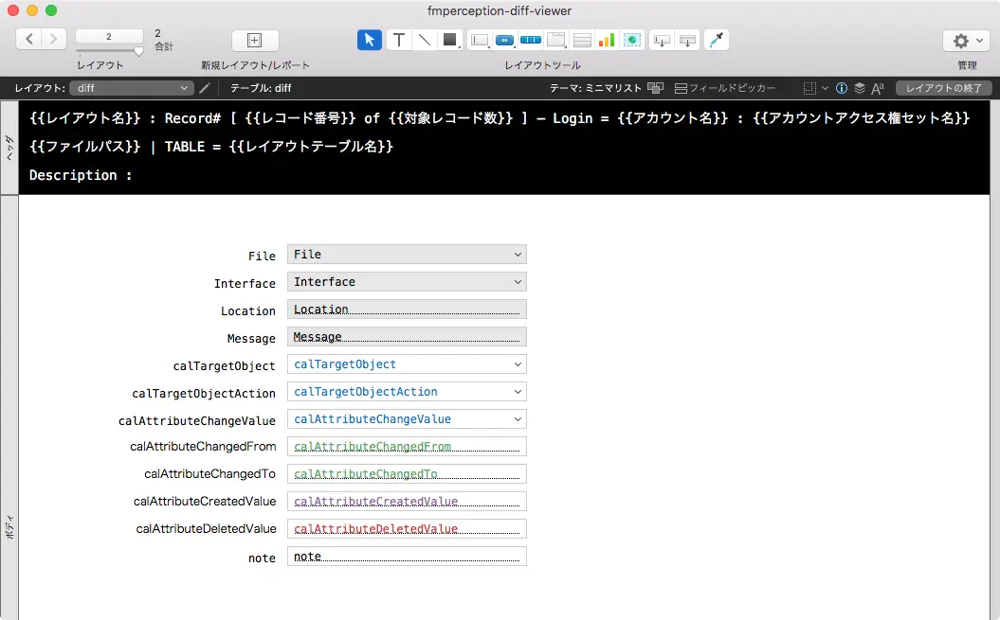
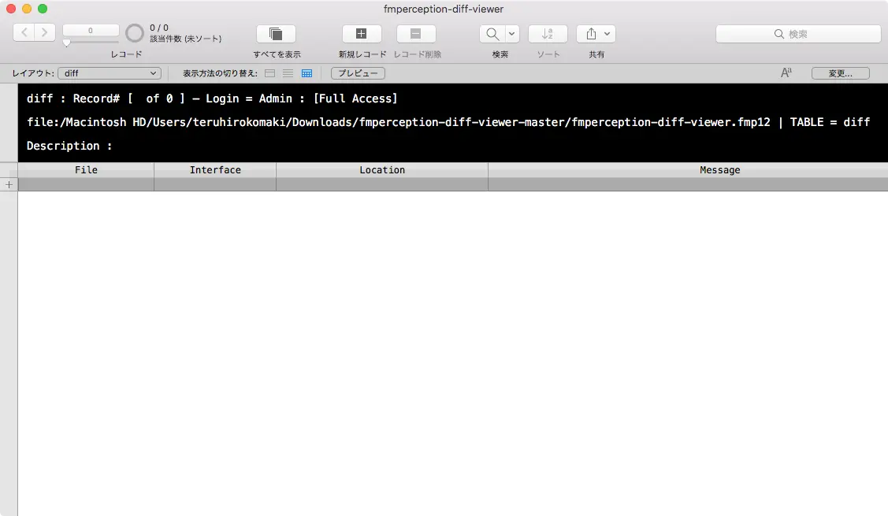

FileMakerのテーブルビューのヘッダーに表示するテキストラベルのメモ
FileMaker開発者は、テーブルビューをよく使うと思います。
そのテーブルビューのヘッダー部分に表示するテキストのメモです。
データファイル
NO ACCESS
{{ファイル名}}
{{レコード番号}}
{{対象レコード数}} / {{レコード総数}}
{{レイアウト名}}
{{レイアウトテーブル名}}
{{アカウント名}}
{{アカウントアクセス権セット名}}
テーブルビューのヘッダー
英語
{{LayoutName}} : Record# [ {{RecordNumber}} of {{FoundCount}} ] – Login = {{AccountName}} : {{AccountPrivilegeSetName}}
{{FilePath}} | TABLE = {{LayoutTableName}}
日本語
{{レイアウト名}} : Record# [ {{レコード番号}} of {{対象レコード数}} ] – Login = {{アカウント名}} : {{アカウントアクセス権セット名}}
{{ファイルパス}} | TABLE = {{レイアウトテーブル名}}
テーブルビューのフッター
英語
Record# [ {{RecordNumber}} of {{FoundCount}} ] - Found : {{FoundCount}} / Total : {{TotalRecordCount}}
日本語
Record# [ {{レコード番号}} of {{対象レコード数}} ] - Found : {{対象レコード数}} / Total : {{レコード総数}}
サンプルファイル
以下のリポジトリからダウンロード(clone)してもらえればと思います。


あとがき
こういうのはGistでも良いんだけど、せっかくなのでブログに書いておきます。
引き続き、追加していきまーす。